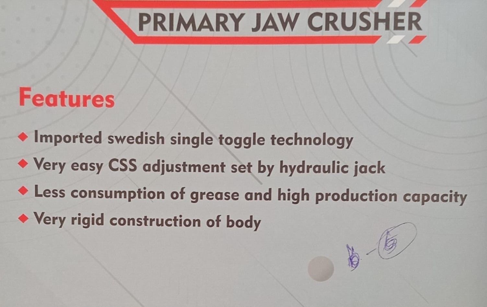
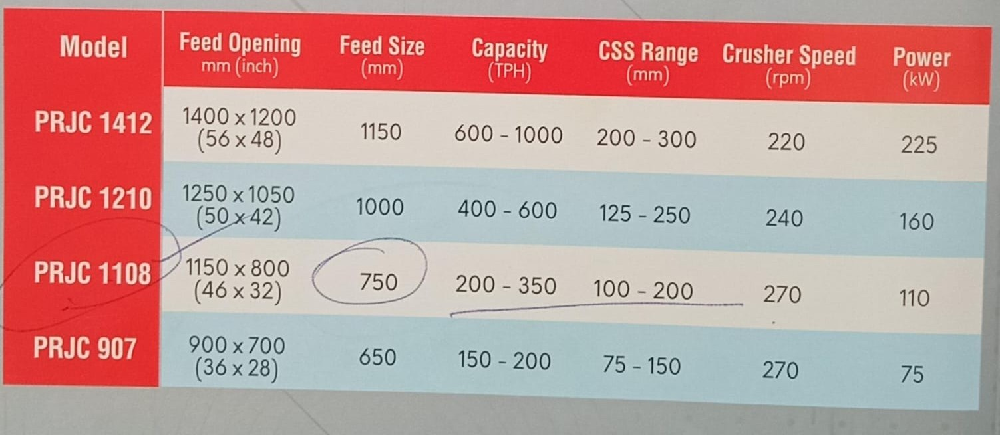
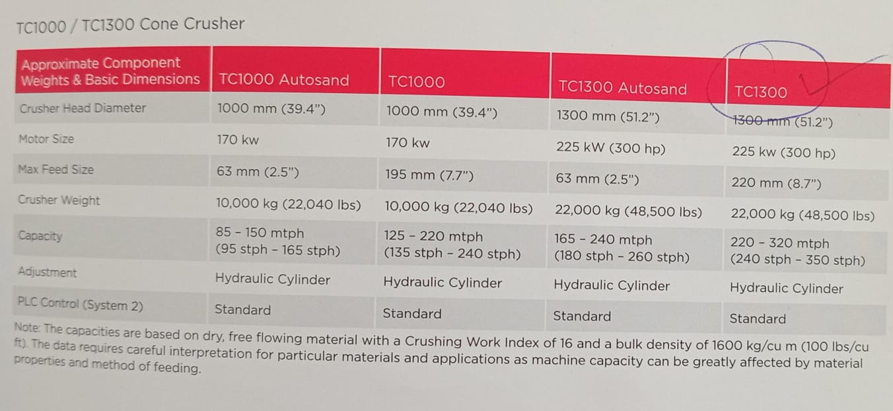
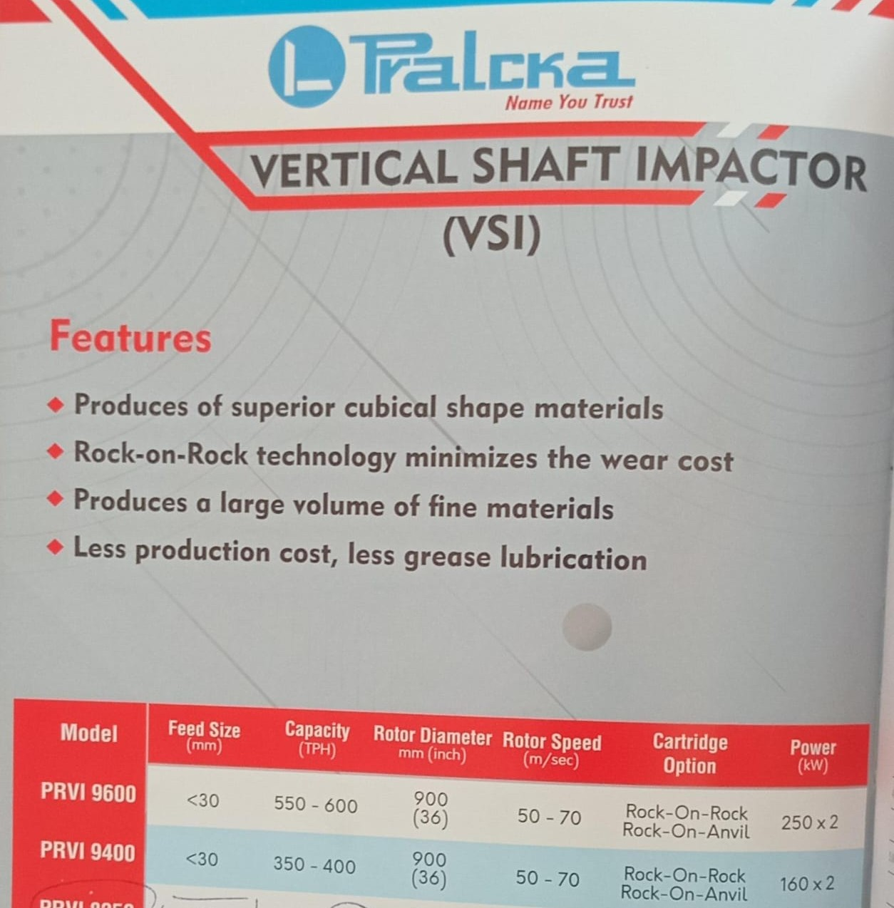
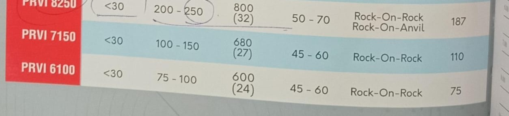
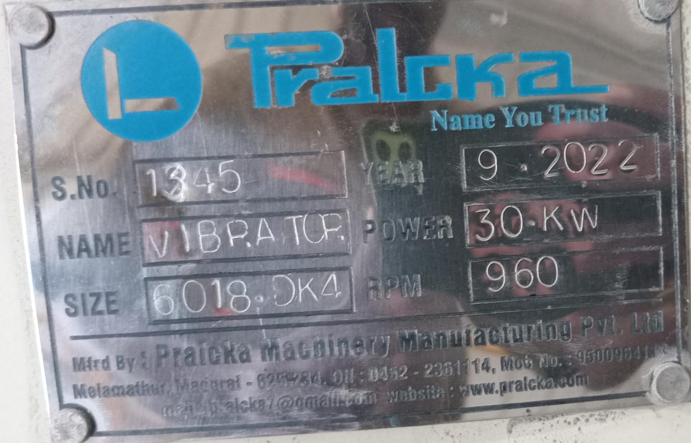
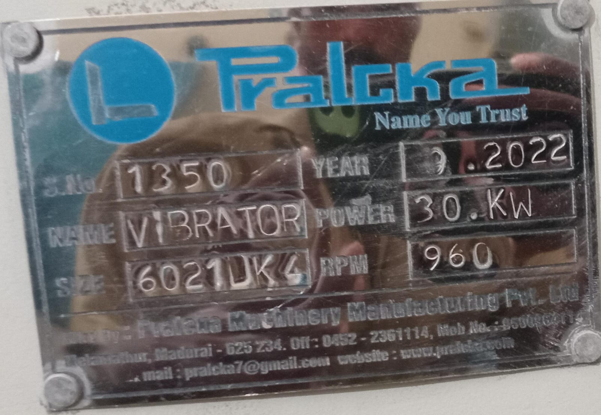
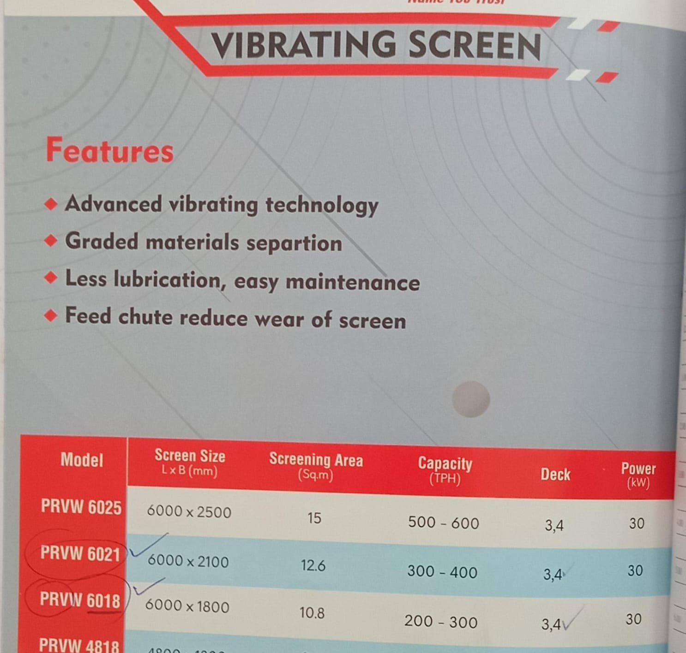
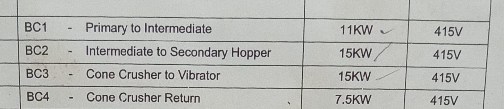
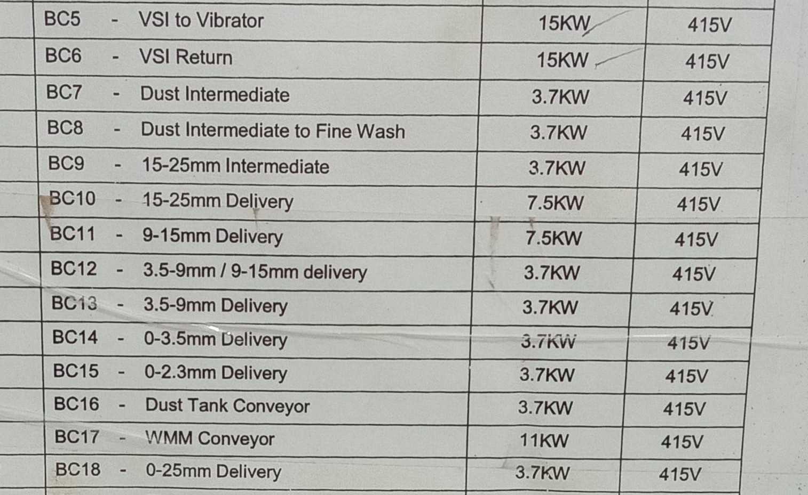

OUR MACHINERY
The detail behind
the performance.
Explore our crushing, screening, and conveyor equipment, with specification sheets and nameplate photographs from our plant documentation.
Capacity figures below are brochure ratings for individual machines. Actual output depends on the material, feed, and operating settings.
PRIMARY CRUSHING
PRJC 1108 jaw crusher
Single-toggle crushing technology with hydraulic closed-side setting adjustment and rigid body construction.
- Feed opening
- 1150 × 800 mm
- Feed size
- 750 mm
- Brochure capacity
- 200–350 TPH
- Closed-side setting range
- 100–200 mm
- Crusher speed
- 270 RPM
- Power
- 110 kW

Primary jaw crusher features · Select image to enlarge
PRJC jaw crusher specification table · Select image to enlargeSECONDARY CRUSHING
TEREX TC1300 cone crusher
The secondary cone crusher uses hydraulic cylinder adjustment. The supplied specification table identifies the TC1300 model.
- Crusher head diameter
- 1300 mm
- Motor power
- 225 kW (300 hp)
- Maximum feed size
- 220 mm
- Crusher weight
- 22,000 kg
- Brochure capacity
- 220–320 metric tonnes/hour
- PLC control (System 2)
- Standard

TC1000 and TC1300 comparison table · Select image to enlargeTERTIARY CRUSHING
PRVI 8250 vertical shaft impactor
Rock-on-rock technology supports cubical shaping and fine-material production. The brochure also lists a rock-on-anvil cartridge option.
- Feed size
- Less than 30 mm
- Brochure capacity
- 200–250 TPH
- Rotor diameter
- 800 mm
- Rotor speed
- 50–70 m/s
- Power
- 187 kW

Pralcka vertical shaft impactor features · Select image to enlarge
PRVI 8250 specification row · Select image to enlargeVIBRATING SCREENS
Separate by size.
Pralcka screens 6018 and 6021.
Equipment nameplates dated September 2022.
Screen 6018
- Brochure screen size
- 6000 × 1800 mm
- Screening area
- 10.8 m²
- Brochure capacity
- 200–300 TPH
- Motor power
- 30 kW
- Nameplate speed
- 960 RPM

Screen 6018 equipment nameplate · Select image to enlargeScreen 6021
- Brochure screen size
- 6000 × 2100 mm
- Screening area
- 12.6 m²
- Brochure capacity
- 300–400 TPH
- Motor power
- 30 kW
- Nameplate speed
- 960 RPM

Screen 6021 equipment nameplate · Select image to enlargeView vibrating screen brochure

Pralcka vibrating screen features and model specifications · Select image to enlargeCONVEYOR SYSTEMS
Connecting each stage.
The conveyor schedule covers 18 lines for transfer, return, washing-feed, and product delivery.
- Lines
- BC1–BC18
- Supply voltage
- 415 V
- Listed motor powers
- 3.7, 7.5, 11 and 15 kW
View the full conveyor table
Conveyor schedule BC1 to BC4 · Select image to enlarge
Conveyor schedule BC5 to BC18 · Select image to enlargeLet’s discuss your material requirements.
Contact us